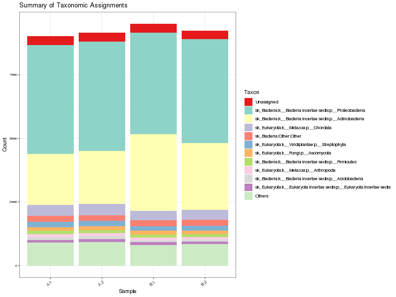
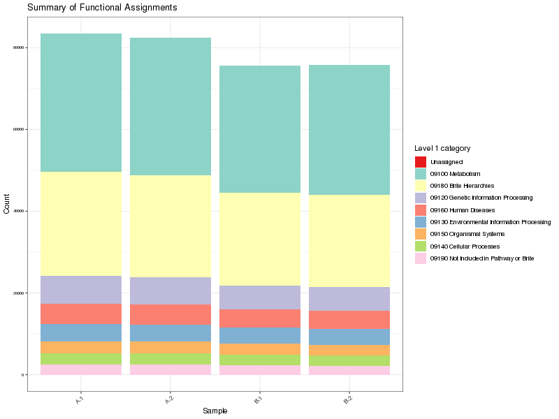

Annotation and quantitation of shotgun metagenomic sequence data
Generated by: George Edward Chlipala
Report date: April 2, 2021
Overview
When you publish manuscripts based on data generated at our facility, we would greatly appreciate an acknowledgement of our efforts. Please cite our facility as follows (for example):
Basic processing of the raw data were performed by the University of Illinois at Chicago Research Informatics Core (UICRIC).
We adhere to a general policy for acknowledgements and authorship as established by the Association for Biomolecular Resource Facilities (ABRF) , and we support the following statement from the ABRF.
The existence of core facilities depends in part on proper acknowledgment in publications. This is an important metric of the value of most core facilities. Proper acknowledgment of core facilities enables them to obtain financial and other support so that they may continue to provide their essential services in the best ways possible. It also helps core personnel to advance in their careers, adding to the overall health of the core facility.
Please contact us for assistance in drafting manuscripts.
Output Files
| File | Description | Type |
|---|---|---|
| taxa_raw_counts.zip | ZIP archive of taxonomic summaries from phylum to species level result - raw sequence counts | result |
| taxa_raw_counts.xlsx | Excel spreadsheet of taxonomic summaries from phylum to species level result - raw sequence counts | result |
| taxa_normalized.zip | ZIP archive of taxonomic summaries from phylum to species level result - normalized as CPM | result |
| taxa_normalized.xlsx | Excel spreadsheet of taxonomic summaries from phylum to species level result - normalized as CPM | result |
| taxa_normalized_archaea.xlsx | Excel spreadsheet of taxonomic summaries from phylum to species level for archaea - normalized as CPM | result |
| taxa_normalized_archaea.zip | ZIP archive of taxonomic summaries from phylum to species level for archaea - normalized as CPM | result |
| taxa_normalized_bacteria.xlsx | Excel spreadsheet of taxonomic summaries from phylum to species level for bacteria - normalized as CPM | result |
| taxa_normalized_bacteria.zip | ZIP archive of taxonomic summaries from phylum to species level for bacteria - normalized as CPM | result |
| taxa_normalized_fungi.xlsx | Excel spreadsheet of taxonomic summaries from phylum to species level for fungi - normalized as CPM | result |
| taxa_normalized_fungi.zip | ZIP archive of taxonomic summaries from phylum to species level for fungi - normalized as CPM | result |
| taxa_normalized_virus.xlsx | Excel spreadsheet of taxonomic summaries from phylum to species level for virus - normalized as CPM | result |
| taxa_normalized_virus.zip | ZIP archive of taxonomic summaries from phylum to species level for virus - normalized as CPM | result |
| funl_raw_counts.xlsx | Excel spreadsheet of funtional gene summaries - raw sequence counts | result |
| funl_table.txt | Counts table of functional genes (orthologs) in TSV format | result |
| funl_table.biom | Counts table of functional genes (orthologs) in BIOM format. | result |
| funl_raw_counts.zip | ZIP archive of functional gene summaries - raw sequence counts | result |
| funl_filtered_raw_counts.xlsx | Excel spreadsheet of filtered funtional gene summaries - raw sequence counts | result |
| funl_filtered_table.txt | Filtered counts table of functional genes (orthologs) in TSV format | result |
| funl_table_filtered.biom | Filtered counts table of functional genes (orthologs) in BIOM format. | result |
| funl_filtered_raw_counts.zip | ZIP archive of filtered functional gene summaries - raw sequence counts | result |
Details
- Method: Centrifuge
-
References were matched using Centrifuge via a nucleotide search. - Reference sequence database (nucleotide) : nt
-
NCBI Genbank non-redundant nucleotide database
- 
Figure 1. Summary of phyla per sample
Table 1. Summary of taxonomic alignments Download table data
| Stats | Raw reads | Total taxonomic alignments | Percent | Phylum sum (all alignments) | Percent |
|---|---|---|---|---|---|
| A.1 | 250000 | 91132 | 0.364528 | 90219 | 0.360876 |
| A.2 | 250000 | 92523 | 0.370092 | 91584 | 0.366336 |
| B.1 | 250000 | 95923 | 0.383692 | 94979 | 0.379916 |
| B.2 | 250000 | 93265 | 0.37306 | 92384 | 0.369536 |
Table 2. Summary of phyla Download table data
| Taxon | Counts | Percent |
|---|---|---|
| sk_Bacteria;k__Bacteria incertae sedis;p__Proteobacteria | 166428 | 45.08% |
| sk_Bacteria;k__Bacteria incertae sedis;p__Actinobacteria | 97260 | 26.35% |
| sk_Eukaryota;k__Metazoa;p__Chordata | 16337 | 4.43% |
| Unassigned;Other;Other | 13917 | 3.77% |
| sk_Bacteria;Other;Other | 9244 | 2.50% |
| sk_Eukaryota;k__Viridiplantae;p__Streptophyta | 7975 | 2.16% |
| sk_Eukaryota;k__Fungi;p__Ascomycota | 5805 | 1.57% |
| sk_Bacteria;k__Bacteria incertae sedis;p__Firmicutes | 4876 | 1.32% |
| sk_Eukaryota;k__Metazoa;p__Arthropoda | 4291 | 1.16% |
| sk_Eukaryota;k__Eukaryota incertae sedis;p__Eukaryota incertae sedis | 4209 | 1.14% |
| sk_Bacteria;k__Bacteria incertae sedis;p__Acidobacteria | 3869 | 1.05% |
| sk_Eukaryota;k__Metazoa;p__Nematoda | 3278 | < 1% |
| sk_Bacteria;k__Bacteria incertae sedis;p__Planctomycetes | 3186 | < 1% |
| sk_Archaea;k__Archaea incertae sedis;p__Euryarchaeota | 2986 | < 1% |
| sk_Eukaryota;k__Viridiplantae;p__Chlorophyta | 2610 | < 1% |
| sk_Bacteria;k__Bacteria incertae sedis;p__Bacteroidetes | 2567 | < 1% |
| sk_Eukaryota;Other;Other | 2177 | < 1% |
| sk_Eukaryota;k__Fungi;p__Basidiomycota | 2176 | < 1% |
| sk_Bacteria;k__Bacteria incertae sedis;p__Deinococcus-Thermus | 1922 | < 1% |
| sk_Eukaryota;k__Metazoa;p__Platyhelminthes | 1680 | < 1% |
| sk_Bacteria;k__Bacteria incertae sedis;p__Cyanobacteria | 1665 | < 1% |
| sk_Bacteria;k__Bacteria incertae sedis;p__Verrucomicrobia | 1418 | < 1% |
| sk_Viruses;k__Viruses incertae sedis;p__Viruses incertae sedis | 1208 | < 1% |
| sk_Bacteria;k__Bacteria incertae sedis;p__Chloroflexi | 1093 | < 1% |
| sk_Eukaryota;k__Metazoa;Other | 1081 | < 1% |
| sk_Bacteria;k__Bacteria incertae sedis;p__Gemmatimonadetes | 1067 | < 1% |
| sk_Eukaryota;k__Eukaryota incertae sedis;p__Apicomplexa | 957 | < 1% |
| sk_Bacteria;k__Bacteria incertae sedis;p__Nitrospirae | 443 | < 1% |
| sk_Archaea;k__Archaea incertae sedis;p__Thaumarchaeota | 428 | < 1% |
| sk_Bacteria;k__Bacteria incertae sedis;p__Chlorobi | 313 | < 1% |
| sk_Bacteria;k__Bacteria incertae sedis;p__Spirochaetes | 299 | < 1% |
| sk_Bacteria;k__Bacteria incertae sedis;p__Armatimonadetes | 177 | < 1% |
| sk_Eukaryota;k__Metazoa;p__Mollusca | 170 | < 1% |
| sk_Archaea;k__Archaea incertae sedis;p__Crenarchaeota | 151 | < 1% |
| s__uncultured prokaryote;Other;Other | 132 | < 1% |
| sk_Eukaryota;k__Viridiplantae;Other | 126 | < 1% |
| sk_Bacteria;k__Bacteria incertae sedis;p__Synergistetes | 112 | < 1% |
| sk_Eukaryota;k__Metazoa;p__Cnidaria | 108 | < 1% |
| sk_Bacteria;k__Bacteria incertae sedis;p__Bacteria incertae sedis | 102 | < 1% |
| sk_Eukaryota;k__Fungi;Other | 89 | < 1% |
| sk_Eukaryota;k__Metazoa;p__Priapulida | 88 | < 1% |
| sk_Bacteria;k__Bacteria incertae sedis;p__Kiritimatiellaeota | 79 | < 1% |
| sk_Bacteria;k__Bacteria incertae sedis;p__Thermotogae | 69 | < 1% |
| sk_Bacteria;k__Bacteria incertae sedis;p__Chlamydiae | 68 | < 1% |
| sk_Eukaryota;k__Metazoa;p__Echinodermata | 66 | < 1% |
| sk_Bacteria;k__Bacteria incertae sedis;p__Tenericutes | 60 | < 1% |
| sk_Bacteria;k__Bacteria incertae sedis;p__candidate division NC10 | 58 | < 1% |
| sk_Bacteria;k__Bacteria incertae sedis;p__Aquificae | 48 | < 1% |
| sk_Bacteria;k__Bacteria incertae sedis;p__Candidatus Acetothermia | 47 | < 1% |
| sk_Bacteria;k__Bacteria incertae sedis;p__Fusobacteria | 43 | < 1% |
| sk_Eukaryota;k__Eukaryota incertae sedis;p__Bacillariophyta | 42 | < 1% |
| s__synthetic construct;Other;Other | 41 | < 1% |
| sk_Eukaryota;k__Metazoa;p__Porifera | 35 | < 1% |
| sk_Eukaryota;k__Metazoa;p__Annelida | 33 | < 1% |
| sk_Eukaryota;k__Fungi;p__Mucoromycota | 33 | < 1% |
| sk_Bacteria;k__Bacteria incertae sedis;p__Chrysiogenetes | 29 | < 1% |
| sk_Bacteria;k__Bacteria incertae sedis;p__Calditrichaeota | 25 | < 1% |
| s__unidentified;Other;Other | 23 | < 1% |
| sk_Bacteria;k__Bacteria incertae sedis;p__Ignavibacteriae | 20 | < 1% |
| sk_Bacteria;k__Bacteria incertae sedis;p__Fibrobacteres | 20 | < 1% |
| sk_Bacteria;k__Bacteria incertae sedis;p__Deferribacteres | 19 | < 1% |
| sk_Bacteria;k__Bacteria incertae sedis;p__Candidatus Peregrinibacteria | 17 | < 1% |
| sk_Eukaryota;k__Metazoa;p__Hemichordata | 15 | < 1% |
| sk_Eukaryota;k__Eukaryota incertae sedis;p__Eustigmatophyceae | 14 | < 1% |
| sk_Bacteria;k__Bacteria incertae sedis;p__Thermodesulfobacteria | 14 | < 1% |
| sk_Eukaryota;k__Eukaryota incertae sedis;p__Euglenida | 14 | < 1% |
| sk_Eukaryota;k__Metazoa;p__Brachiopoda | 13 | < 1% |
| sk_Eukaryota;k__Fungi;p__Chytridiomycota | 13 | < 1% |
| sk_Bacteria;k__Bacteria incertae sedis;p__Candidatus Saccharibacteria | 13 | < 1% |
| sk_Bacteria;k__Bacteria incertae sedis;p__Elusimicrobia | 13 | < 1% |
| sk_Eukaryota;k__Fungi;p__Microsporidia | 10 | < 1% |
| sk_Bacteria;k__Bacteria incertae sedis;p__Candidatus Beckwithbacteria | 9 | < 1% |
| sk_Archaea;Other;Other | 9 | < 1% |
| s__uncultured prokaryote AT5;Other;Other | 8 | < 1% |
| sk_Eukaryota;k__Eukaryota incertae sedis;p__Phaeophyceae | 7 | < 1% |
| sk_Viruses;Other;Other | 7 | < 1% |
| sk_Bacteria;k__Bacteria incertae sedis;p__Coprothermobacterota | 7 | < 1% |
| s__uncultured marine microorganism HF4000_ANIW137J11;Other;Other | 6 | < 1% |
| sk_Bacteria;k__Bacteria incertae sedis;p__candidate division WWE3 | 6 | < 1% |
| sk_Bacteria;k__Bacteria incertae sedis;p__Dictyoglomi | 6 | < 1% |
| sk_Bacteria;k__Bacteria incertae sedis;p__Candidatus Cloacimonetes | 5 | < 1% |
| sk_Eukaryota;k__Metazoa;p__Placozoa | 4 | < 1% |
| s__uncultured marine microorganism HF4000_APKG8L7;Other;Other | 4 | < 1% |
| s__uncultured organism CA878;Other;Other | 4 | < 1% |
| sk_Eukaryota;k__Metazoa;p__Rotifera | 4 | < 1% |
| s__uncultured marine microorganism HF4000_APKG5H11;Other;Other | 3 | < 1% |
| sk_Archaea;k__Archaea incertae sedis;p__Candidatus Korarchaeota | 3 | < 1% |
| sk_Bacteria;k__Bacteria incertae sedis;p__Caldiserica | 3 | < 1% |
| s__uncultured marine microorganism HF4000_005I08;Other;Other | 3 | < 1% |
| sk_Eukaryota;k__Fungi;p__Fungi incertae sedis | 3 | < 1% |
| sk_Bacteria;k__Bacteria incertae sedis;p__Candidatus Wolfebacteria | 2 | < 1% |
| s__uncultured marine microorganism HF4000_009L19;Other;Other | 2 | < 1% |
| sk_Eukaryota;k__Fungi;p__Blastocladiomycota | 2 | < 1% |
| s__uncultured organism CA37;Other;Other | 2 | < 1% |
| sk_Eukaryota;k__Metazoa;p__Tardigrada | 2 | < 1% |
| s__uncultured organism CA915;Other;Other | 2 | < 1% |
| sk_Archaea;k__Archaea incertae sedis;p__Nanoarchaeota | 2 | < 1% |
| s__uncultured marine microorganism HF4000_ANIW93N21;Other;Other | 2 | < 1% |
| sk_Eukaryota;k__Metazoa;p__Nemertea | 2 | < 1% |
| s__uncultured prokaryote 2E01B;Other;Other | 2 | < 1% |
| sk_Eukaryota;k__Metazoa;p__Ctenophora | 2 | < 1% |
| s__Shuttle vector pXsp8;Other;Other | 1 | < 1% |
| s__uncultured marine microorganism HF4000_APKG2H5;Other;Other | 1 | < 1% |
| sk_Eukaryota;k__Metazoa;p__Chaetognatha | 1 | < 1% |
| sk_Eukaryota;k__Fungi;p__Zoopagomycota | 1 | < 1% |
| s__uncultured marine microorganism HF4000_APKG8C21;Other;Other | 1 | < 1% |
| sk_Archaea;k__Archaea incertae sedis;p__Candidatus Micrarchaeota | 1 | < 1% |
| s__Cloning vector pABCc-mob;Other;Other | 1 | < 1% |
| s__uncultured marine microorganism HF4000_ANIW137I15;Other;Other | 1 | < 1% |
| s__Plasmid pFKY4;Other;Other | 1 | < 1% |
| sk_Eukaryota;k__Eukaryota incertae sedis;p__Xanthophyceae | 1 | < 1% |
| s__uncultured marine microorganism HF4000_ANIW137G21;Other;Other | 1 | < 1% |
| s__Cloning vector pAB34;Other;Other | 1 | < 1% |
| sk_Bacteria;k__Bacteria incertae sedis;p__Candidatus Melainabacteria | 1 | < 1% |
| s__uncultured organism pXylP;Other;Other | 1 | < 1% |
| s__uncultured marine microorganism HF4000_APKG10H12;Other;Other | 1 | < 1% |
| sk_Bacteria;k__Bacteria incertae sedis;p__Candidatus Campbellbacteria | 1 | < 1% |
| sk_Bacteria;k__Bacteria incertae sedis;p__Candidatus Woesebacteria | 1 | < 1% |
| s__uncultured marine microorganism HF4000_137B17;Other;Other | 1 | < 1% |
| sk_Bacteria;k__Bacteria incertae sedis;p__Candidatus Curtissbacteria | 1 | < 1% |
| s__Shuttle vector pDA71;Other;Other | 1 | < 1% |
| s__uncultured organism pCelD;Other;Other | 1 | < 1% |
| s__Broad host range vector vector pCVD019;Other;Other | 1 | < 1% |
| sk_Archaea;k__Archaea incertae sedis;p__Archaea incertae sedis | 1 | < 1% |
| s__Vector pATMTNF1;Other;Other | 1 | < 1% |
| s__uncultured marine microorganism HF4000_APKG1C9;Other;Other | 1 | < 1% |
| sk_Bacteria;k__Bacteria incertae sedis;p__Candidatus Berkelbacteria | 1 | < 1% |
| s__uncultured marine microorganism HF4000_APKG10F17;Other;Other | 1 | < 1% |
| s__uncultured organism pCelK;Other;Other | 1 | < 1% |
| s__uncultured marine microorganism HF4000_APKG2J17;Other;Other | 1 | < 1% |
Details
- Method: DIAMOND
-
References were matched using DIAMOND via a translated nucleotide search. - Method: Taxonomic filter
-
Custom ParametersData are filtered to retain reads associated with particular taxa. - regex = \sUnassigned,sk_Archaea,sk_Bacteria,k__Fungi,sk_Viruses
- Reference sequence database (protein) : swissprot
-
UniProt Swiss-Prot manually annotated and reviewed protein database.
- 
Figure 1. Summary of high level functional annotations per sample
Table 1. Summary of functional annotation Download table data
| Stats | Raw reads (functional) | Total functional alignments | Percent | Subsystem level 1 sum | Percent | Filtered subsystem level 1 sum | Percent |
|---|---|---|---|---|---|---|---|
| A.1 | 500000 | 38692 | 0.077384 | 83415 | 0.16683 | 51681 | 0.103362 |
| A.2 | 500000 | 38400 | 0.0768 | 82516 | 0.165032 | 51372 | 0.102744 |
| B.1 | 500000 | 36549 | 0.073098 | 75633 | 0.151266 | 48689 | 0.097378 |
| B.2 | 500000 | 36411 | 0.072822 | 75756 | 0.151512 | 47806 | 0.095612 |
Table 2. Summary of high level functional annotations Download table data
| Level 1 category | Counts | Percent |
|---|---|---|
| 09100 Metabolism | 130178 | 41.02% |
| 09180 Brite Hierarchies | 95904 | 30.22% |
| 09120 Genetic Information Processing | 25125 | 7.92% |
| 09160 Human Diseases | 18578 | 5.85% |
| 09130 Environmental Information Processing | 16423 | 5.18% |
| 09150 Organismal Systems | 10861 | 3.42% |
| 09140 Cellular Processes | 10739 | 3.38% |
| 09190 Not Included in Pathway or Brite | 9476 | 2.99% |
| Unassigned | 36 | < 1% |